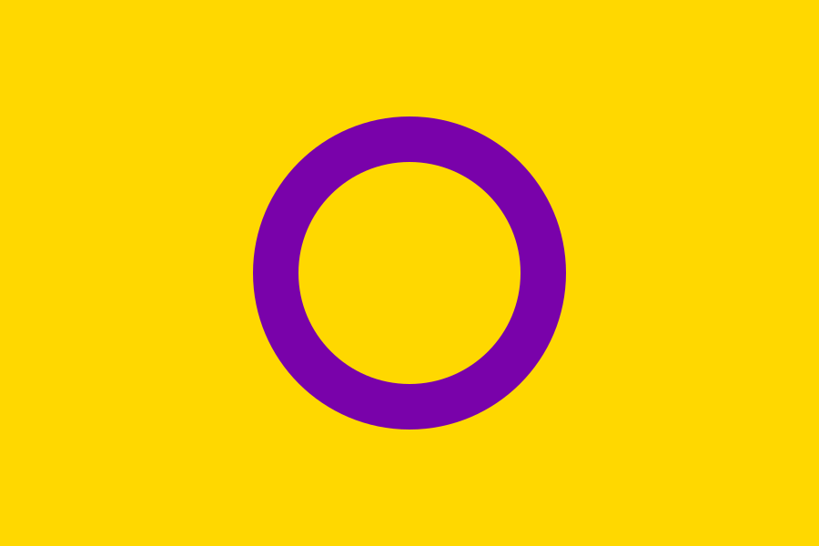

認識跨性別者與間性人
認識跨性別(Transgender)

廣義的跨性別者是指性別氣質、性別認同不受傳統男女二元對立框架限制者；狹義的則是指心理性別與生理性別不同者。透過化學治療或手術對生理性徵進行改變者才稱為變性人(Transsex)，並非所有跨性別者都會變性喔。全世界因歧視、憎恨對跨性別者造成的迫害不容小覷，1998年起，11月20日被訂為國際跨性別紀念日，以悼念反跨性別憎恨暴力謀殺事件的受害者，並提升大眾對於跨性別者權益的關注。
認識間性人(Intersex)

間性人為Intersex的中譯，華人世界中也有陰陽人與雙性人的說法，是指生理上難以傳統醫學對於性別的定義判定其性別者。丘愛芝是華人世界第一位公開現身的陰陽人，他創立了國際陰陽人組織中文版，並發起擁抱陰陽人運動，呼籲大眾看見陰陽人的存在、關注他們的權益。
瞭解更多：
｜台灣性別不明關懷協會
｜國際陰陽人組織中文版